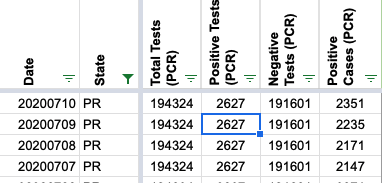
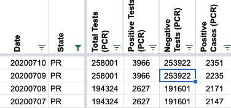
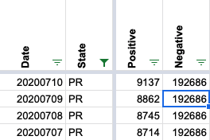
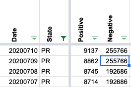

[PR] New Puerto Rico testing data report (as of 2020-07-09)
State or US: Puerto Rico
This is a continuation of https://github.com/COVID19Tracking/issues/issues/568
As infuriatingly usual, the only way to get official data on the number of tests in Puerto Rico is to follow certain journalists on Twitter who pester the Department of Health periodically for the numbers. We just got a new set today:
- https://twitter.com/angelicaserran0/status/1281694446233497602
- https://twitter.com/RobbyCortes/status/1281697289279545344
I’ve got the images and copied the data into a CSV file with all of the previous ones here:
- https://github.com/sacundim/covid-19-puerto-rico/blob/master/assets/data/PuertoRico-bioportal.csv
- https://github.com/sacundim/covid-19-puerto-rico/blob/master/assets/source_material/2020-07-09/2020-07-09_bioportal.jpg
- https://github.com/sacundim/covid-19-puerto-rico/blob/master/assets/source_material/2020-07-09/2020-07-09_bioportal_p2.jpg
{kind=link}
{kind=link}
sacundim added the label Data quality on July 10, 2020 at 2:24 pm
MattHilliard closed the issue on July 10, 2020 at 6:50 pm
MattHilliard commented on July 10, 2020 at 6:51 pm
Oh and thank you so much @sacundim for passing along this data! Your help is very much appreciated!
PCR Columns Before: 
PCR Columns After: 
Negative column before: 
Negative column after (using Total Tests PCR - Positive Cases PCR from first day (258001 - 2235 = 255766) per extensive discussion with @muamichali last time: 